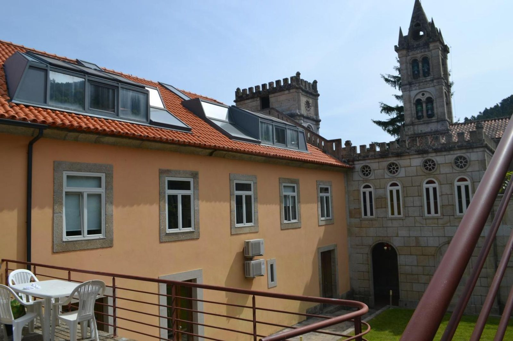

História e Requinte
A casa começou como construção rural em granito, cresceu no século XVIII até à forma que tem hoje, e foi depois adaptada pelo Monsenhor António Pinto d'Abreu para servir de colónia de férias de verão aos alunos e professores do colégio Vasco da Gama, de Lisboa.
O arquiteto António Couto d'Abreu desenhou então a capela e a varanda de acesso, acrescentadas à empena leste, que passou a ser a entrada.
A cantaria foi executada à mão, com técnicas e materiais da região.
Fica na encosta virada a norte, junto à E.N. 222, a cerca de 6 km de Cinfães e 10 km de Resende.
